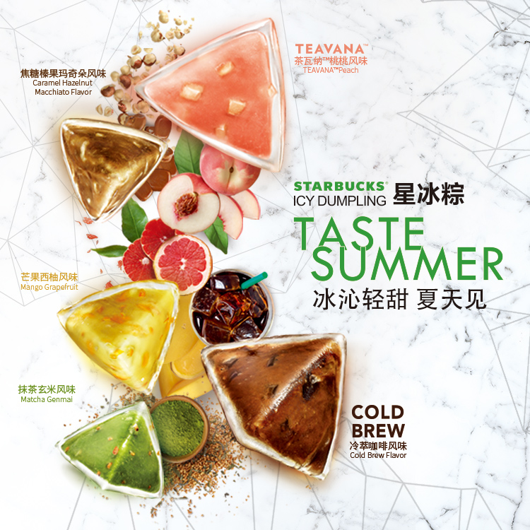
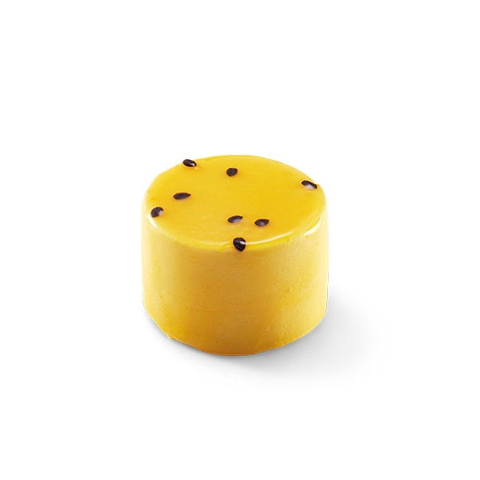
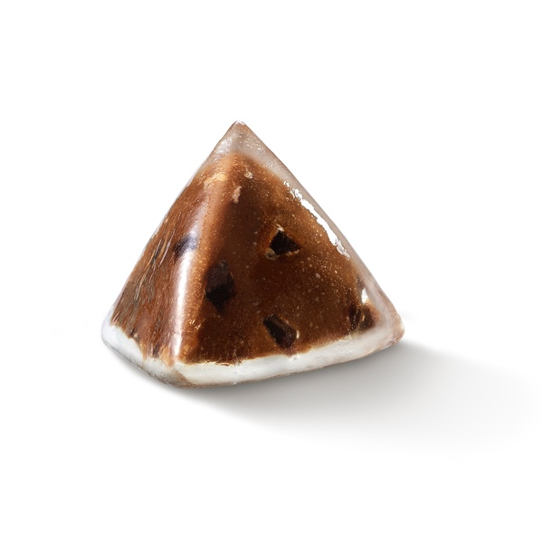
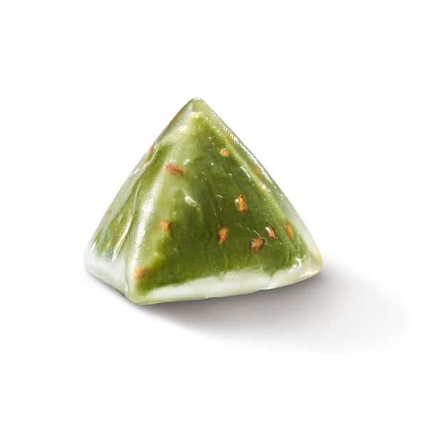
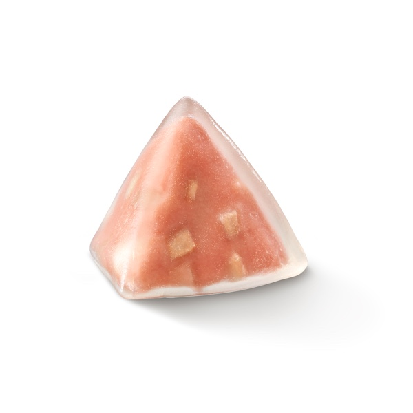
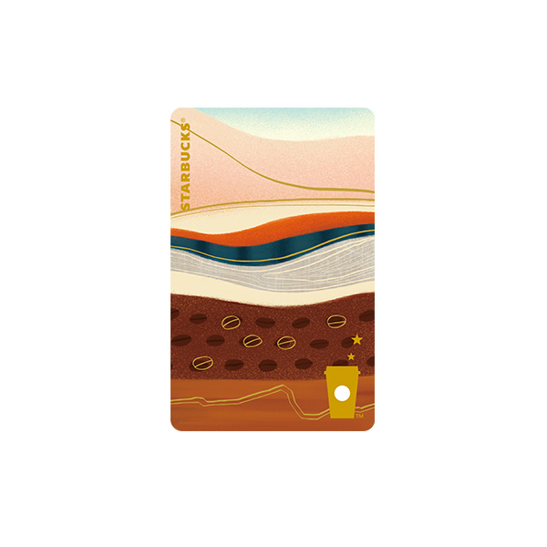
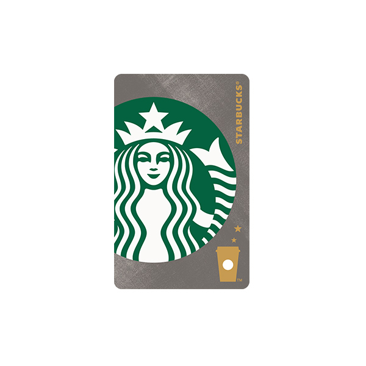

玩出我的夏天
全新抹茶提拉米苏风味星冰乐®，抹茶清香与芝士蛋糕风味融合，清新与香浓间的微妙平衡，让这个夏天多一份惬意感受。桃桃星冰乐®挚爱回归，桃子“住进”星冰乐，精选原榨桃果汁和桃果肉果冻，深浅不一的纹理，看上去像一只可口的水蜜桃。

冰沁轻甜 夏天见
星冰粽，夏天见。口感醇厚的冷萃咖啡风味、浓郁香醇的焦糖榛果玛奇朵风味、含有清甜白桃果肉的桃桃风味、浓浓热带风情的芒果西柚风味和滋味丰富的抹茶玄米风味重磅上市，这5款口味均源于星巴克经典饮品，冰沁Q弹的冰皮包裹优选馅料，给你更多夏日甜品选择。

冰沁轻甜 夏天见
星冰粽，夏天见。口感醇厚的冷萃咖啡风味、浓郁香醇的焦糖榛果玛奇朵风味、含有清甜白桃果肉的桃桃风味、浓浓热带风情的芒果西柚风味和滋味丰富的抹茶玄米风味重磅上市，这5款口味均源于星巴克经典饮品，冰沁Q弹的冰皮包裹优选馅料，给你更多夏日甜品选择。
所有新品

百香果沁慕斯蛋糕

冷萃咖啡风味

抹茶玄米风味

茶瓦纳™桃桃风味

咖啡起源艺术风星享卡

金属灰美人鱼经典款星享卡 (新常规款)